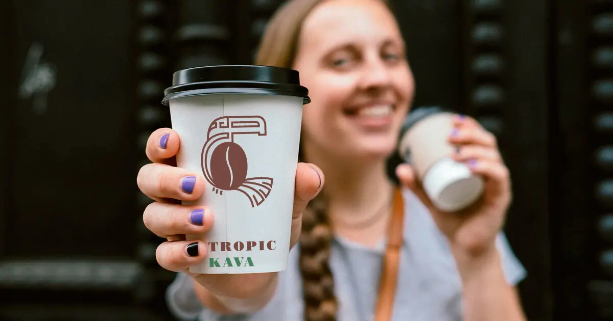

Кава користь чи шкода - диявол криється в деталях
*Протягом століть кава нарікали по-різному.
Одні кажуть, що кава здатна викликати божевілля, інші ж називають її ліками від ліні і "даром богів". Кава дійсно має чарівний ефект. Не має значення, чи подобається вам смак кави, ви п'єте каву за звичкою або розраховуєте на енергію, яку надає кофеїн, чи ви коли-небудь замислювалися над тим, що насправді відбувається з вашим організмом, поки ви отримуєте насолоду від ранкової чашки кави?
Хімічні елементи, які входять до складу кави
Більше п'ятдесяти країн випускають приблизно п'ять мільйонів тонн кави щорічно (поступаючись першим місцем тільки нафті в галузі міжнародної торгівлі). Лише за приблизними оцінками, більше 1,5 млрд. чашок кави випивають щодня по всьому світу. Подорож кави до нашого столу була тривалою, починаючи ще з Ефіопії (в стародавні часи), де вона використовувався як їжа, спеція, вино, ліки і священний напій, перш ніж стати популярним ранковим напоєм, яким є сьогодні.
Каву виробляють з кавових бобів, тому вона містить фітонутрієнти і поліфеноли (це хімічні сполуки, яким притаманні антиоксидантні властивості). Одна чашка кави містить від 130 до 250 мг кофеїну (залежить від біологічного виду і сорту кави), а також кілька сотень інших природних хімічних речовин, наприклад, білки, набір амінокислот, ліпідів, вуглеводів, вітамінів і мінералів, включаючи калій, кальцій і магній. Наприклад, типова чашка кави (об'ємом 240 мл) містить такий набір поживних речовин (від рекомендованої щоденної норми споживання з їжею):
- Вітаміни групи В:
- Вітамін B2 (рибофлавін): 11%
- Вітамін B5 (пантотенова кислота): 6%
- Вітамін B1 (тіамін): 2%
- Вітамін B3 (ніацин): 2%
- Фолат (сіль фолієвої кислоти): 1%
- Марганець: 3%
- Калій: 3%
- Магній: 2%
- Фосфор: 1%
Зручно, чи не так, втім ці показники бути незначними, але якщо помножити їх на кількість чашок, які ви зазвичай п'єте протягом дня ... тобто , разом із зарядом бадьорості ви додатково отримуєте достатню кількість поживних речовин, хоча основною перевагою кави (саме натуральної кави, а не розчинної) є все ж таки високий вміст антиоксидантів. Середньостатистична людина, яка дотримується збалансованого харчування, насправді отримує більше антиоксидантів з кави, ніж з фруктів і овочів разом.
Складові частини кави значно відрізняються в залежності від типу кави, де вона вирощується, земля , навколишнє середовище і метод збору, обсмаження, зберігання і варіння. Наприклад, кавові зерна робусти, мають вдвічі більше концентрації кофеїну (2.3-3.2%) в порівнянні із зернами арабіки (0.6-1.2%), слід враховувати, що вміст кофеїну в каві не слід сприймати за принципом - «чим більше - тим краще», кофеїн, як і будь-який хімічний елемент потребує правильного дозування.
Саме кофеїн, є основним «чарівною» складовою кави, а також є найвідомішим елементом вашої кави. До речі найуживанішою психоактивною речовиною в світі - є саме кофеїн тому його сприятливий вплив на організм було досліджено дуже досконально.
Кава в цілому являє собою досить складний коктейль із тисячами різних складових, і список аргументів «за» і «проти» доволі довгий, отож пропоную їх розглянути:
Аргументи «За» або користь кави для здоров'я
кофеїн потрапляє в мозок через кров, і починає працює як стимулятор (в цей момент ви відчуваєте бадьорість і примноження енергії), підвищена активність мозку стимулює вивільнення дофаміну і адреналіну, що і дає вам такий суттєвий імпульс енергії та ейфорії, після ранкової чашки кави
(зрозуміло, що мова йдеться про каву вищого гатунку із вмістом кофеїну менше 1%)
Кава підвищує продуктивність
Випийте чашку чорної кави за годину до тренування, і ваша продуктивність може стати покращитись на 11-12%. Кофеїн підвищує рівень адреналіну в крові. Адреналін допомагає вашому тілу підготуватися до фізичного навантаження, тобто ніякої магії.
Кава знижує вагу
так як напій містить магній і калій, який допомагає організму людини використовувати інсулін, регулює рівень цукру в крові і зменшує потяг до «солоденького» і переїдання. Кава може пригнічувати апетит і стимулювати спалювання калорій, але це не чарівна паличка від втрати ваги (вибачайте, але не стане причиною помітних змін, якщо тільки ви не будете пити каву - до, після і замість їжі).
Кава спалює зайві жири
А точніше, кофеїн допомагає жировим клітинам руйнувати жир і використовувати його в якості внутрішнього палива (наприклад, для тренувань у залі).
Кава підвищує розумову активність
помірне споживання кофеїну, 1-3 чашок напою в день, допомагає вам зосередитися і підвищити вашу розумову активність. .
(так, я ще раз підкреслю, що мова йде про арабіку із вмістом кофеїну менше 1%)
Кава знижує ризик розвитку раку
останні дослідження показали, що кава може знизити ризик розвитку раку передміхурової залози у чоловіків на 20%, а рак ендометрія у жінок - на 25%. Люди в експериментальній групі пили чотири чашки кави на день (контрольна група не пила каву взагалі). Кофеїн може також запобігти розвитку найбільш поширеного виду раку шкіри (базальноклітинна карцинома).
Кава знижує ризик
помірне споживання кави (я маю на увазі 2-4 чашки на день) знижує ймовірність розвитку інсульту.
Кава зменшує ризик хвороби Паркінсона і Альцгеймера
невгамовні вчені довели, що регулярне вживання кави зменшує ймовірність захворіти хворобою Паркінсона на 25%. Більш того - вже є докази того, що кава викликає активність в частині мозку, ураженої паркінсонізмом, а певний рівень кофеїну в крові знижує ризик хвороби Альцгеймера.
Кава зменшує ризик діабету типу
кофеїн зменшує вашу чутливість до інсуліну і зменшує стійкість до глюкози, знижуючи ризик захворіти діабетом 2го типу.
Кава піднімає настрій
кофеїн стимулює центральну нервову систему, оскільки стимулює вироблення нейротрансмітерів, таких як серотонін (гормону щастя), дофамін і норадреналін, які підвищують ваш настрій, але це за умови вмісту кофеїну в каві менше 1%, тобто за умови вживання високогірної 100% арабіки - це важливо, тому що вміст кофеїну в робусті практично в 2 рази більше і така кількість це передозування і викликає стрес для організму.
До речі неякісна кава може бути токсичною для вашого організму в її складі може бути багато домішок враховуючи хімію, якою удобрюють «каву масового споживання», або великий вміст кофеїну - це може стати причиною головного болю, безсоння або хвороби.
Корисна порада - пийте лише високогірну 100% арабіку, і вам не доведеться турбуватися про негативні наслідки, пов’язані із пристрастю до цього дивовижного напою.
(високогірна арабіка - це еко-кава за замовчуванням, вирощена без хімічних добрив - спробуйте затягнути мішки із добривом на висоту 1600+ метрів над рівнем моря, це можливо, звичайно, але в більшості випадків це економічно не вигідно, при цьому рівнинну, дешеву арабіку або робусту, дуже вигідно обприскувати різними стимуляторами росту і труїти хімією різних жучків-павучків)
Було б неправильно говорити винятково про позитивні ефекти, не згадуючи про негативні. Пропоную розглянути деякі важливі негативні аспекти кави (хоча, це перш за все залежить від особливостей організму людини).
Аргументи «проти» чи шкода від кави
Кава може викликати
Значна кількість кофеїну протягом 40 хвилин стимулює вироблення кортизолу (гормону стресу),і може викликати тахікардію. Смертельна доза кофеїну в вашому організмі становить 10-13 грамів.
Погана кави призводить до безсоння і порушення сну
першу скрипку тут також грає кофеїн. Рекомендована максимальна кількість кофеїну становить 400 міліграмів (це приблизно 4 чашки кави). Споживання занадто великої кількості кофеїну може призвести до прискореного серцебиття і може навіть посилити панічні атаки. Скоріш за все, ви вже знаєте, яка кількість і яку саме кава вам підходить.
Кава викликає звикання
кофеїн викликає звикання, а відсутність декількох чашок може дуже гостро відчуватись вашим організмом. Основна проблема полягає в тому, що кофеїн може призвести до залежності у багатьох людей. Коли люди систематично споживають кофеїн, вони звикають до нього - він або перестає працювати так, як раніше, або потрібна більша доза для отримання бажаного ефекту, (в цілому, коли ви споживаєте каву, керуйтеся - приказкою «що занадто, то нерозсудливо»).
Коли люди обмежують вживання кофеїну, (після тривалого споживання у великих кількостях) в них з'являються так звані симптоми «відмови», такі як головний біль, втома, розумова пасивність і дратівливість. Це може тривати кілька днів. Багатьом людям не подобається відчуття залежності від хімічної речовини у буквальному розумінні задля власного нормального функціонування. Вони віддають перевагу кавовому напою без кофеїну.
Як правило, каву без кофеїну виготовляють шляхом промивання кавових зерен розчинниками. Кожен раз, коли це роблять, невеликий відсоток кофеїну розчиняється в розчиннику, і цей процес повторюється до тих пір, поки більша частина кофеїну буде видалена. Тим не менш, важливо враховувати, що навіть кава без кофеїну містить кофеїн, якого значно менше, ніж в звичайній каві, але все ж таки він присутній.
Кава без кофеїну не має всіх тих переваг для вашого здоров'я, які має звичайна кава (я маю на увазі захист вашого мозку в старості і максимальну користь для вашого організму).
Якщо хочете зробити вашу каву корисною, запам'ятайте лише три важливих правила.
Перше правило - щоб користь для здоров'я була максимальною, запам'ятайте найголовніше - НЕ додавайте нічого зайвого в вашу чашку. Я маю на увазі цукор і будь-який вид штучного молочного або жирного вершкового, я б назвав це правило так - «п'єте каву - пийте каву».
Друге і не менш важливе правило - готуйте каву з фільтром, не фільтрована кава (наприклад, зварена в турці або за допомогою французького пресу) містить кафестол (Cafestol), речовина, яка може підвищити рівень холестерину, не до критичного рівня, але якщо помножити кількість чашок на найближчі 10 років, то це стає досить критичним моментом.
Третє і найважливіше –купуйте лише якісні зерна, високогірної 100% арабіки вищого , повірте, вони не просто так коштують трохи дорожче низької арабіки, і тим більше робусти.
Рекомендую з'ясувати з чого, вже скільки років поспіль, вам готують напій в тій кав'ярні неподалік місця роботи, каву з якої, до речі, ви і пити-то не можете без цукру або молока.
Також майте на увазі, що деякі з кавових напоїв в місцях масового продажу, в таких, наприклад, як Starbucks, можуть містити сотні калорій і цілу купу цукру з хімією. Ці напої НЕ корисні.
Цінителям кави з підвищеним кров'яним тиском або безсонням взагалі варто обмежити споживання кави на деякий час, щоб дізнатися, чи допомагає їм це. Тут все, як то кажуть ... стане зрозуміло.
Якщо у вас високий рівень холестерину, а ви полюбляєте поласувати ароматною кавою варто дотримуватись розумної кількості споживання кави (1-3 чашок на день). Це може запобігти серйозним захворюванням, збільшити вашу розумову і фізичну активність, і навіть допомогти вам втратити вагу.
Для здорової людини кава має позитивний ефект для організму. Пам'ятайте, що до тих пір, поки ви п'єте якісну каву в помірній кількості, ви можете і повинні насолоджуватися цим, знаючи, що це є добре.
Якщо ви ще не п'єте каву, я не думаю, що описані вище переваги стануть вагомою причиною для того, щоб почати пити каву, саме тому найвагоміший аргумент «за» я приберіг для вас наостанок – кави вищого ґатунку неймовірно смачна, навіть без цукру і молока :)
Якщо ви п'єте каву, і вам це подобається, то аргументи на користь від кави, мабуть, набагато переважають її шкідливі наслідки для вашого здоров'я. Я особисто п'ю каву, кожен день ... приблизно 2-3 чашки і відчуваю себе чудово.
Дякую за увагу, поділіться статтею із друзями, вже час усім замислитися, яку ж каву, ми всією Україною так безтурботно п'ємо! !